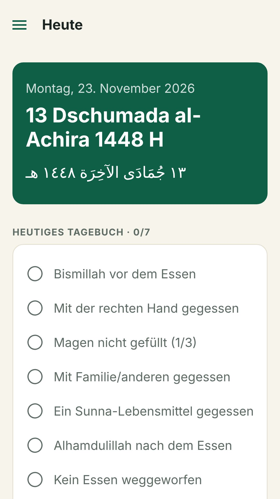
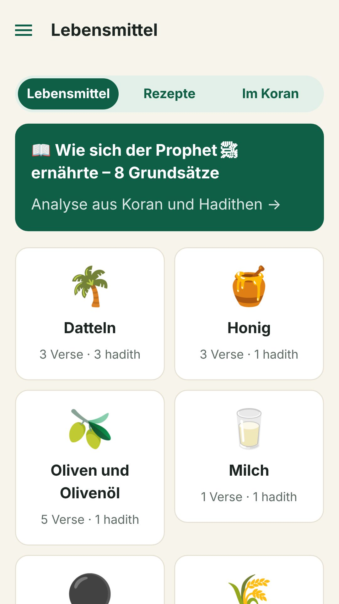
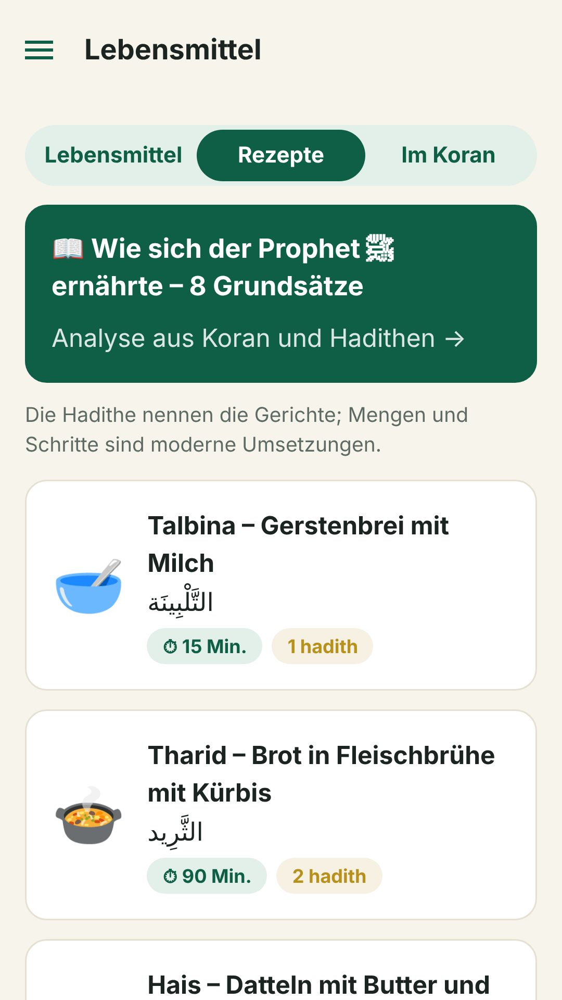
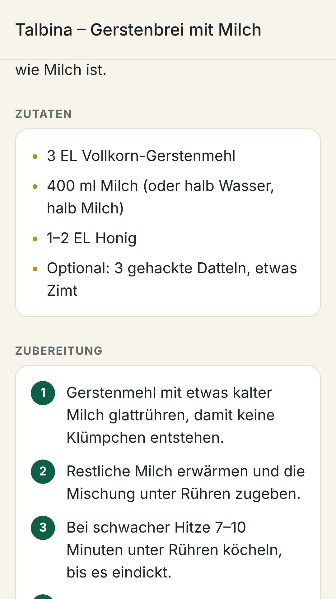
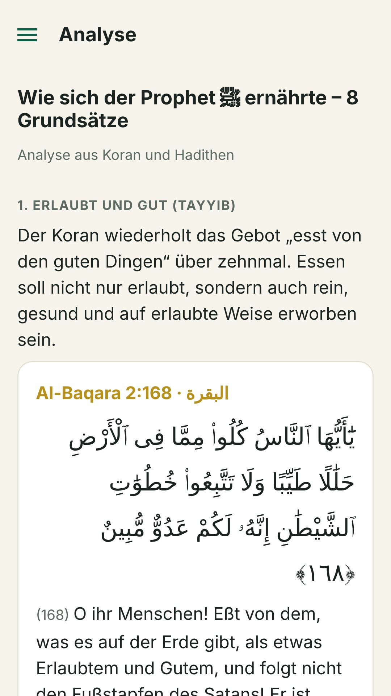
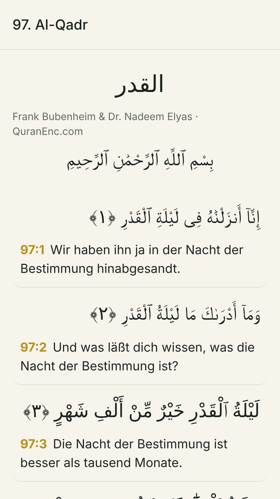

Dieta Islame
Ernährung nach Koran und Sunna · Ushqimi sipas Kur’anit dhe Sunetit






Inhalt: 15 Lebensmittel aus Koran und Sunna, 12 Rezepte aus den Hadithen, Lebensmittel im Koran mit rund 70 Versen,
8 Grundsätze der prophetischen Ernährung, Ess-Etikette, Halal & haram, freiwilliges Fasten mit islamischem Kalender,
tägliches Tagebuch und der vollständige Koran (Arabisch, Deutsch, Albanisch) – offline.
© 2026 Naki GmbH · Muttenz, Schweiz · Quellen: Tanzil, QuranEnc (Hasan Nahi, Bubenheim & Elyas), fawazahmed0/hadith-api